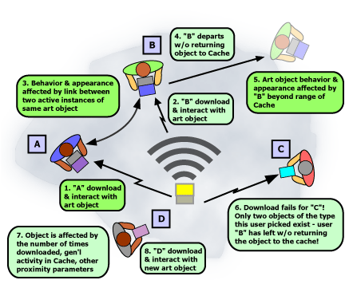

Example Scenario
One digital art object created for the WiFi.ArtCache is called Plant Life, authored by the polymedia artist Marina Zurkow. It has the proximity-influenced narrative described below. What unfolds in this narrative is affected by whether the object running on a hypothetical user's computer is in or out of range of the Cache's WiFi node, how many other objects are active while this user is in range of the node, and bits of communication that take place between various visitor's instances of the Plant Life object.
|

|
Plant Life
This WiFi.ArtCache object is designed to represent the vagaries of an imaginary forest. When you download Plant Life to your WiFi enabled laptop, PDA or desktop, you see a small, lone tree. The tree lies by itself, and the day, as indicated by the sun low on the horizon, is young. As more people download these Plant Life objects, the forest becomes more active. The scene begins to assume a less barren appearance. A wily spider monkey appears along with other critters. Your tree as well as others begin to mature and bloom.
You've downloaded your Plant Life object to your mobile device so you can continue to interact with it later when you go home. But when you get home, the scene is different. Its late fall, and your tree is in a distinctive autumnal state. Leaves slowly fall to the ground in a pile, the sky is dark despite the fact that it is only three in the afternoon. Most markedly, there is no sign of activity. No other trees are around and the animals have all gone away.
more
|
|